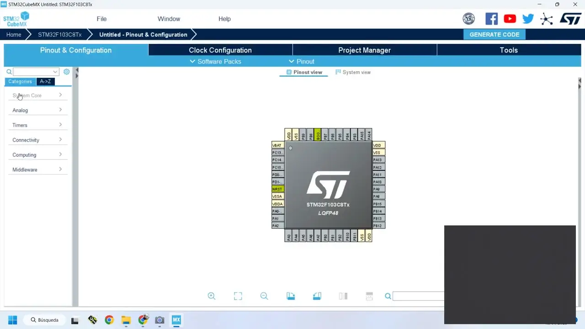
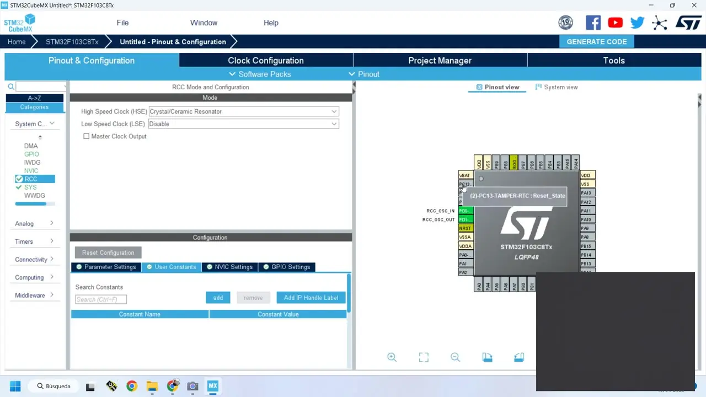
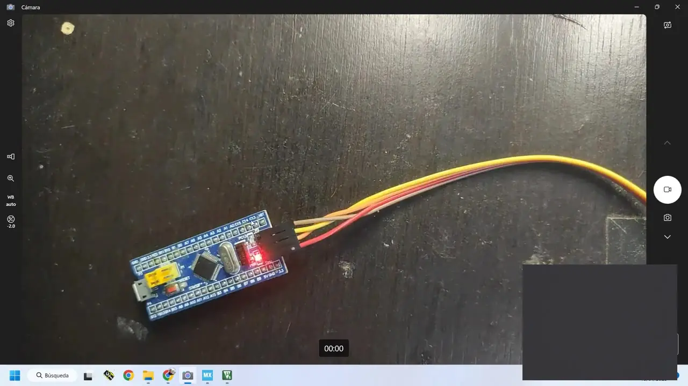
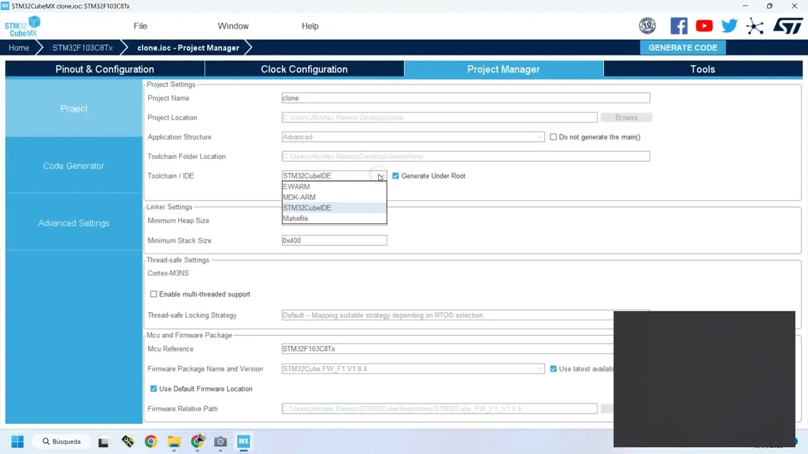
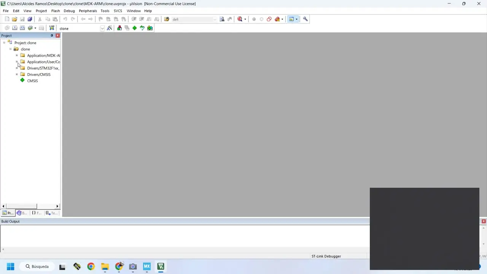
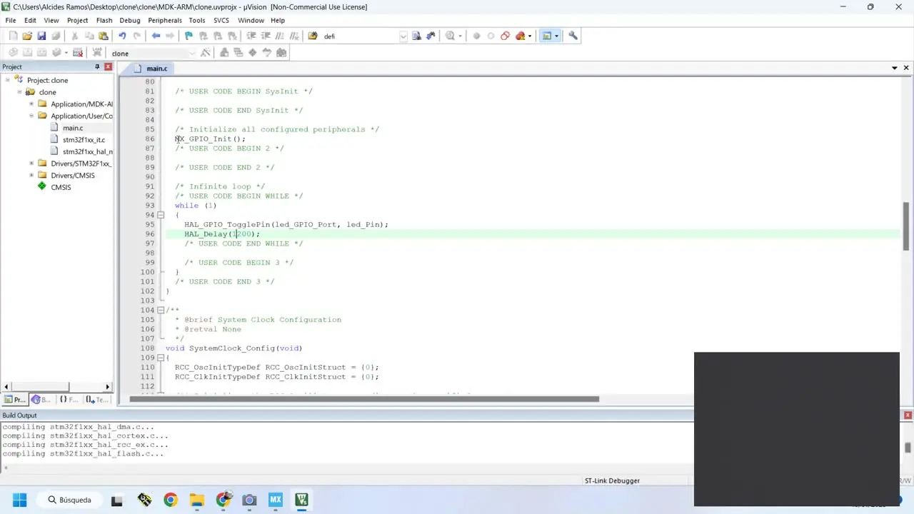

- Micro: STM32F103C8Tx.
- RCC → HSE: Crystal/Ceramic Resonator y en Clock Configuration el PLL al máximo (72 MHz).
- PC13 → GPIO_Output con etiqueta led.


El ST-Link V2 clon es muy económico y además alimenta el micro por USB, pero tiene limitaciones: STM32CubeIDE no reconoce su número de serie (no deja programar ni depurar) y el STM32CubeProgrammer actual tampoco conecta. Vemos dos salidas con una Blue Pill: 1) compilar en CubeIDE generando el .hex y grabarlo con la versión anterior, STM32 ST-LINK Utility (STSW-LINK004); 2) regenerar el proyecto desde STM32CubeMX para MDK-ARM (Keil µVision), que sí programa y depura con el clon.



En Project Manager el nombre clone, Toolchain STM32CubeIDE, y GENERATE CODE.
while (1)
{
HAL_GPIO_TogglePin(led_GPIO_Port, led_Pin);
HAL_Delay(200);
}Al darle Run/Debug, CubeIDE detecta el ST-Link al escanear, pero el clon no tiene un número de serie de fábrica válido (suele ser una letra o un número suelto) y CubeIDE se niega a programar o depurar. El STM32CubeProgrammer actual lo ve pero tampoco conecta.
Con una Blue Pill clon y un ST-Link original sí funcionaba CubeProgrammer. El problema aquí es el programador clon.
Clic derecho en el proyecto → Properties → C/C++ Build → Settings → MCU Post build outputs y marca Intel Hex (y binario si quieres). Compila: los archivos quedan en Debug.
En st.com busca STSW-LINK004 · STM32 ST-LINK Utility (reemplazada por CubeProgrammer, pero sigue disponible). Si hace falta, desde ella actualiza el firmware del ST-Link (desconectar, conectar y Upgrade).
clone.hex de la carpeta Debug.Con esta opción programas, pero pierdes la depuración.
Vuelve a CubeMX y en Project Manager cambia Toolchain / IDE a MDK-ARM y GENERATE CODE. Ojo: el proyecto queda para el último IDE que generes; usa uno u otro.


El código del while(1) se conserva. Cambia el retardo (ej. a 1000), compila (Build) y pulsa Download. A veces hay que desconectar y reconectar para que arranque.

En Keil sí puedes entrar en Debug: paso a paso, registros, pausar el programa. Resumen: con CubeIDE + clon solo grabas con la ST-LINK Utility antigua y sin depuración; con Keil tienes las dos cosas.